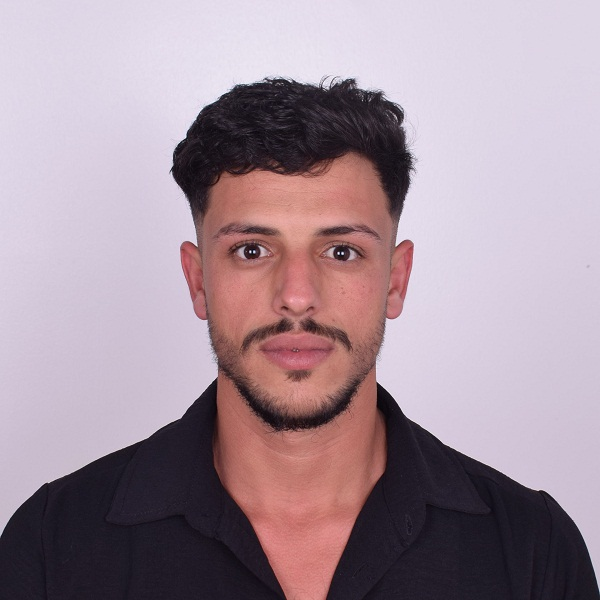
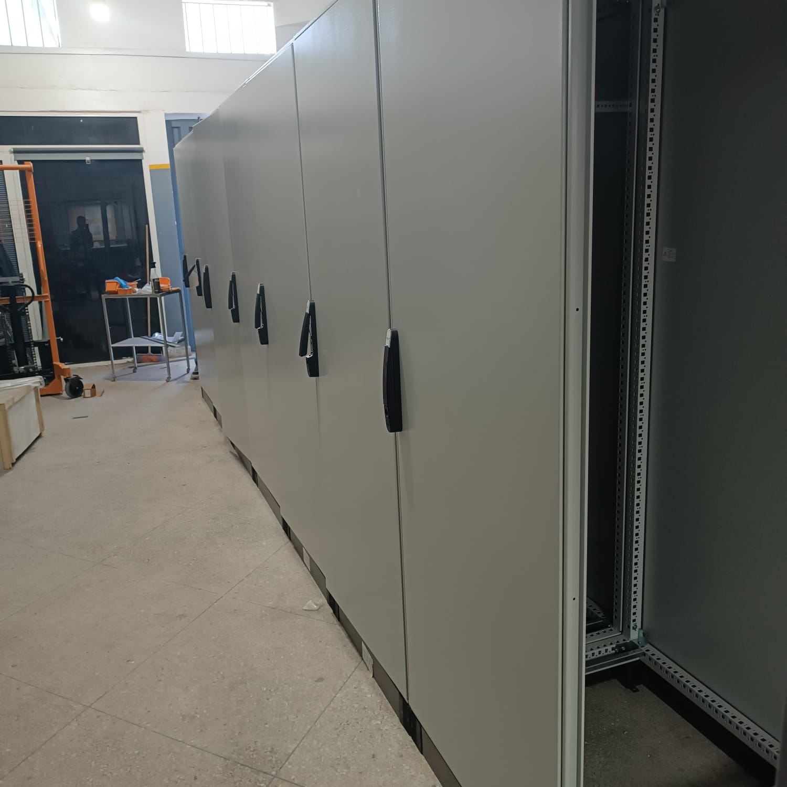
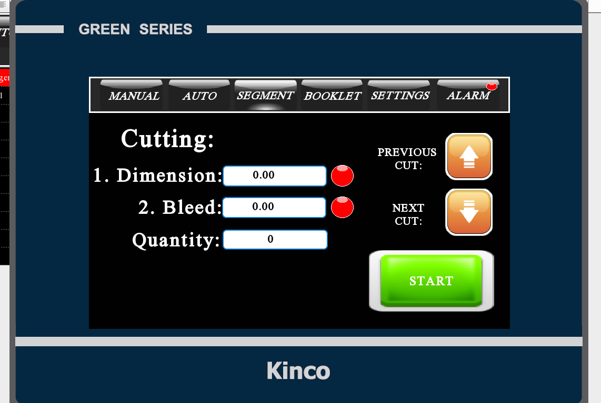
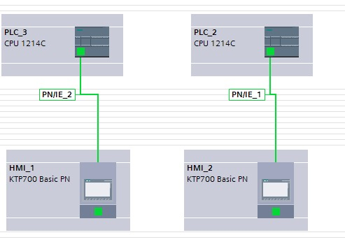
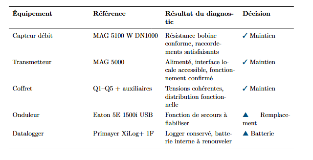
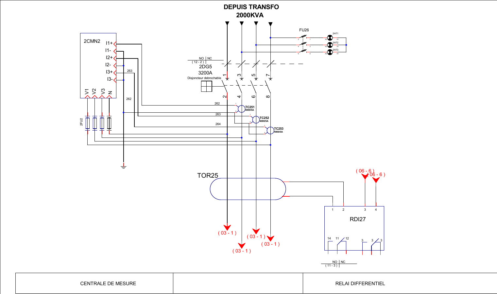

Studies & protection
Electrical documentation supporting industrial installations and equipment.
- LV load schedules, calculations and diagrams
- Cable routing and control circuits
- Sepam, ABB REF and MiCOM protection
From electrical studies and PLC programming to operator supervision and on-site commissioning.


A selection of industrial projects connecting electrical engineering, automation and practical diagnosis.

Electrical engineering, control and supervision for a wastewater treatment installation.
Explore projectElectrical studies, protection circuits and commissioning work for an industrial distribution installation.
Explore project
Centralised exchange of operating data and commands between a central station and five remote stations.
Explore projectProject profiles, technical analyses and engineering studies, each with its scope and selected documentation.
Electrical engineering, control and supervision for a wastewater treatment installation.
Explore projectElectrical studies, protection circuits and commissioning work for an industrial distribution installation.
Explore projectCentralised exchange of operating data and commands between a central station and five remote stations.
Explore project
PLC control development for a cement mill, presented alongside cement-process supervision views.
Explore project
Machine control and operator interfaces for cutting dimensions, positions and production quantities.
Explore projectPLC and operator-interface development for an industrial crusher.
Explore projectControl and supervision of an industrial mixing system.
Explore projectAutomation for pump commands and operating-state monitoring.
Explore projectGenerator synchronisation work using Deep Sea Electronics DSE8610 MKII controllers.
Explore project
Electrical measurement analysis covering phase loading, power factor and network quality.
Explore project
PLC and HMI configurations for two drinking-water pumping stations.
Explore project
A tank-process control study combining pump commands, level, temperature, mixing and supervision.
Explore projectSiemens control configurations and water-system supervision interfaces.
Explore project
Component-level diagnosis and electrical checks for a flow-measurement system.
Explore project
Functional planning for a conveyor demonstration lane and an X-ray decision interface.
Explore project
Electrical studies and protection work supporting industrial equipment and installations.
Explore projectElectrical documentation supporting industrial installations and equipment.
Control programs and operator interfaces connected to the equipment.
Communication, functional checks and diagnosis on industrial systems.
I am a State-qualified engineer in Electrical Engineering and Industrial Control. Since February 2025, I have worked at Afriqua Pool Technologie in Casablanca, combining electrical studies, automation, supervision and commissioning.
Afriqua Pool Technologie · Casablanca
PLC/HMI/SCADA, electrical studies, protection, functional testing and technical coordination.
Electrical Engineering and Industrial Control
Faculty of Sciences and Techniques, Mohammedia
Faculty of Sciences Dhar El Mahraz, Fez
Faculty of Sciences Dhar El Mahraz, Fez
Available immediately · International mobility
French and English fluent